Introduction
Poles and zeros are fundamental concepts in circuit analysis that determine the frequency response and stability of electronic circuits. Understanding how to identify and analyze them is crucial for designing and optimizing any analog circuit.
In this tutorial, we'll explore the fundamentals of poles and zeros, their types and their effect on the transient response of the circuit.
What are Poles and Zeros?
Poles and zeros are the roots of the denominator and numerator of a transfer function, respectively. In simpler terms, they represent the frequencies at which the circuit's response becomes infinite or zero.
where \(H(s)\) is the transfer function from input to output, \(N(s)\) is the numerator polynomial and \(D(s)\) is the denominator polynomial.
For example, in the following transfer function, the zero is at \(s = -1\) and the pole is at \(s = -2\)
Types of Poles and Zeros
Poles and Zeros can be classified into different types based on their location. These include:
- Left Half Plane (LHP) poles and zeros
- Right Half Plane (RHP) poles and zeros
Left Half Plane (LHP) Poles
In the following transfer function the pole exists at \(s = -100\)
The magnitude and phase of \(H(s)\) can be easily found by plugging in \(s = j\omega\) in the transfer function.
As \(\omega\) increases, the magnitude decreases and the phase becomes more negative. Hence, a LHP pole always leads to reduction in magnitude and a negative phase. At \(\omega = 0\), the magnitude is \(0\text{ dB}\) and the phase is \(0^\circ\). As \(\omega\) approaches infinity, the magnitude approaches \(-\infty\text{ dB}\) and the phase approaches \(-90^\circ\). Exactly at \(\omega = 100\), the magnitude is \(-3\text{ dB}\) and the phase is \(-45^\circ\) as shown in the following figure.
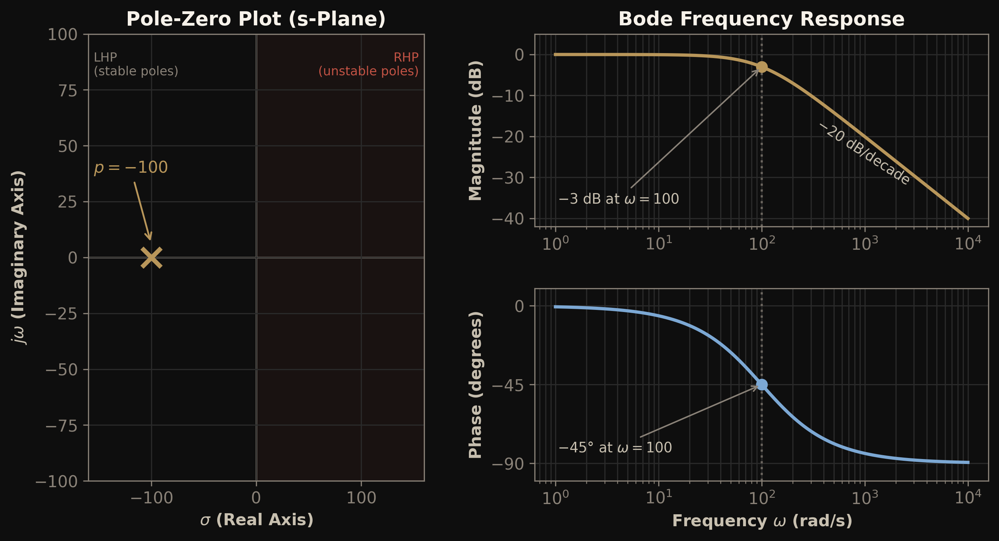
By taking the inverse Laplace transform, the time domain expression can be obtained as:
where \(u(t)\) is the unit step function ensuring the response is zero for \(t < 0\). It can be visualized as follows:
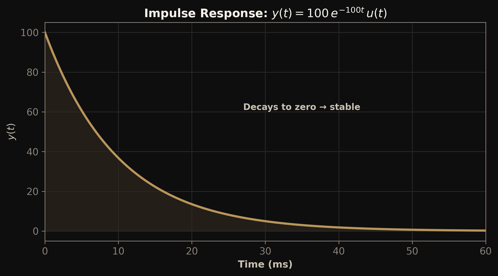
The poles can also be complex in nature. Complex poles always appear in complex conjugate pairs of the form \(-a \pm jb\) in the transfer function. Why? For example the following transfer function has poles at \(s = -10 \pm j100\).
The time domain response of the LHP complex poles is a decaying sinusoid as shown below.
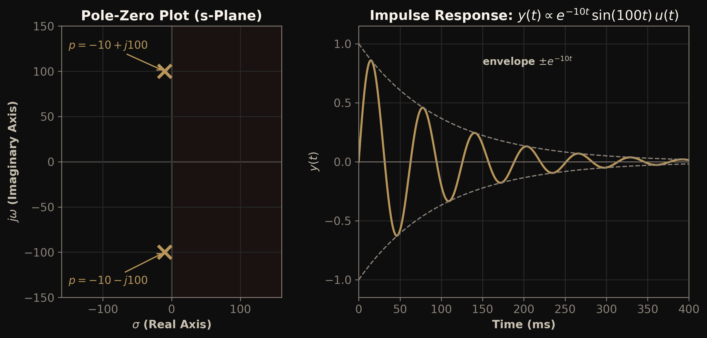
Left Half Plane (LHP) Zeros
In the following transfer function the zero exists at \(s = -100\)
The magnitude and phase of \(H(s)\) can be easily found by plugging in \(s = j\omega\) in the transfer function.
As \(\omega\) increases, the magnitude increases and the phase becomes more positive. Hence, a LHP zero always leads to increase in magnitude and a positive phase. At \(\omega = 0\), the magnitude is \(0\text{ dB}\) and the phase is \(0^\circ\). As \(\omega\) approaches infinity, the magnitude approaches \(+\infty\text{ dB}\) and the phase approaches \(+90^\circ\). Exactly at \(\omega = 100\), the magnitude is \(+3\text{ dB}\) and the phase is \(+45^\circ\) as shown in the following figure.
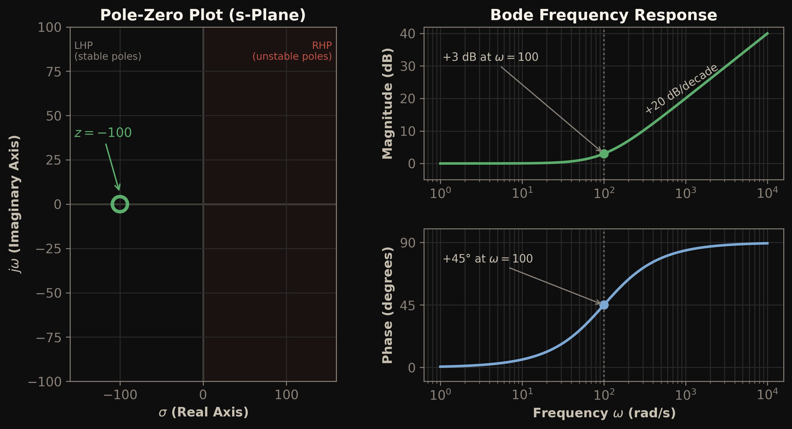
To observe the zero in the time domain, it must be paired with a pole (no physical system can realize a zero by itself). Placing the pole a decade higher, at \(s = -1000\), keeps the zero's behavior dominant:
Applying a unit step to this system gives:
The zero feeds a scaled derivative of the input directly to the output, so at \(t = 0\) the output instantly jumps to \(10\), in the same direction as the final value, and then settles to \(1\)
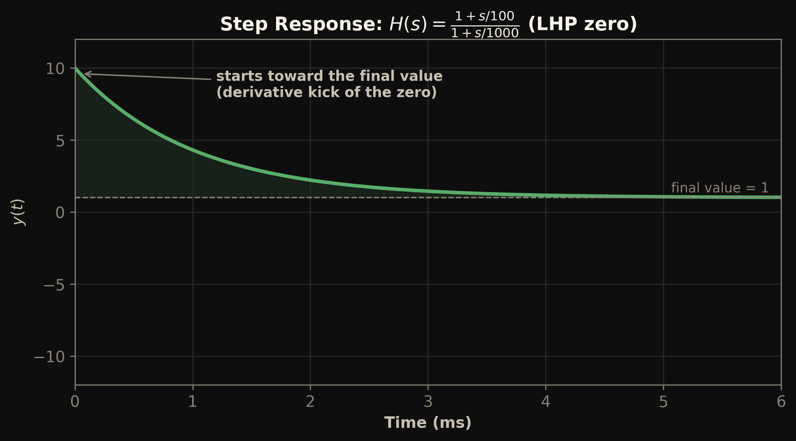
Right Half Plane (RHP) Poles
In the following transfer function the pole exists at \(s = +100\)
The magnitude and phase of \(H(s)\) can be easily found by plugging in \(s = j\omega\) in the transfer function.
As \(\omega\) increases, the magnitude decreases (similar to a LHP pole) but the phase starts at \(-180^\circ\) instead of \(0^\circ\). At \(\omega = 0\), the magnitude is \(0\text{ dB}\) and the phase is \(-180^\circ\). As \(\omega\) approaches infinity, the magnitude approaches \(-\infty\text{ dB}\) and the phase approaches \(-90^\circ\). Exactly at \(\omega = 100\), the magnitude is \(-3\text{ dB}\) and the phase is \(-135^\circ\) as shown in the following figure.
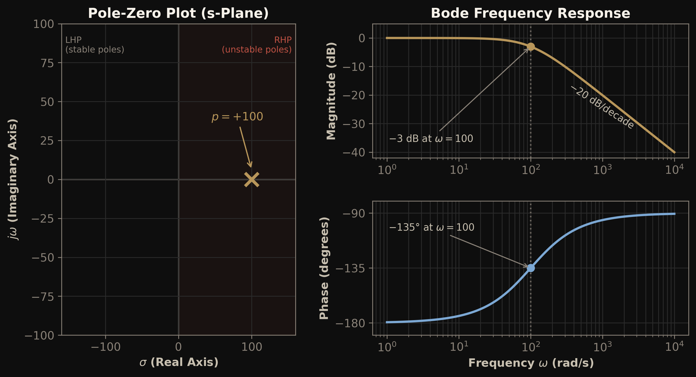
By taking the inverse Laplace transform, the time domain expression can be obtained as:
where \(u(t)\) is the unit step function ensuring the response is zero for \(t < 0\). Unlike a LHP pole, the response grows exponentially with time. It can be visualized as follows:
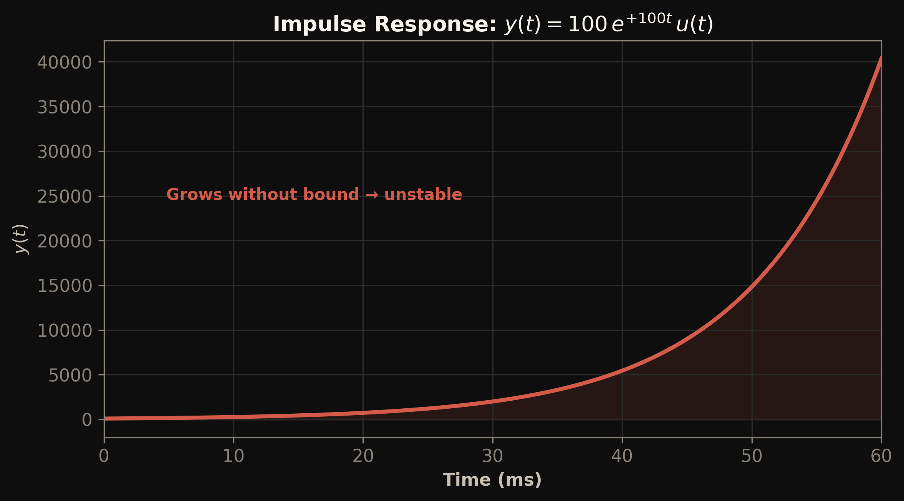
The RHP poles can also be complex in nature. For example, a system with poles at \(s = 10 \pm j100\):
The time domain response of RHP complex poles is a growing sinusoid as shown below.
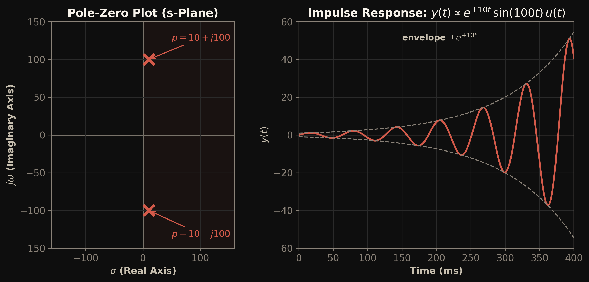
Right Half Plane (RHP) Zeros
In the following transfer function the zero exists at \(s = +100\)
The magnitude and phase of \(H(s)\) can be easily found by plugging in \(s = j\omega\) in the transfer function.
For a RHP zero the magnitude increases with \(\omega\) but with a negative phase shift. At \(\omega = 0\), the magnitude is \(0\text{ dB}\) and the phase is \(0^\circ\). As \(\omega\) approaches infinity, the magnitude approaches \(+\infty\text{ dB}\) and the phase approaches \(-90^\circ\). Exactly at \(\omega = 100\), the magnitude is \(+3\text{ dB}\) and the phase is \(-45^\circ\) as shown in the following figure.
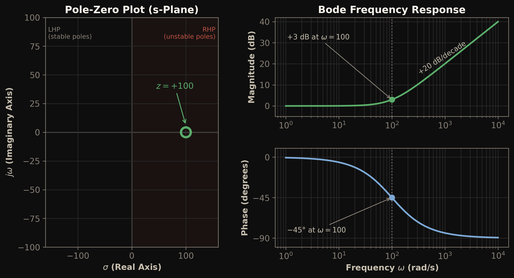
The same behavior can be seen in the time domain. As before, the zero is paired with a pole at \(s = -1000\) so it can be realized:
Applying a unit step gives:
The derivative feedforward now arrives with a minus sign, so at \(t = 0\) the output first goes to \(-10\), in the wrong direction, and then recovers and settles at \(1\). This initial undershoot is called inverse response, and systems that show it are called non-minimum-phase systems
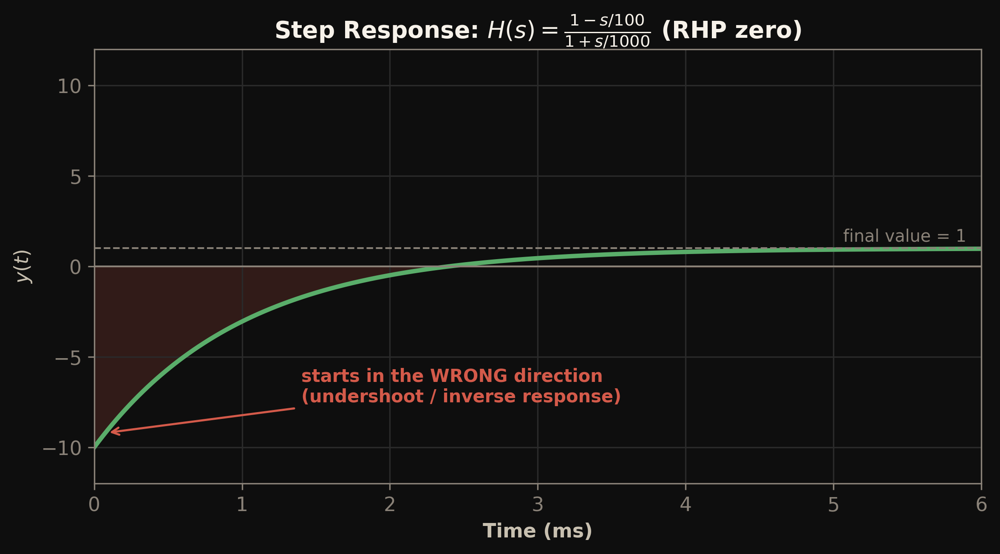
Origin of Zeros
As described previously, a zero is a frequency at which the transfer function becomes zero. A system can generate zeros in the following two ways:
- Two parallel paths with different speeds (phases)
- A frequency dependent shunt path (bypass) to ground
Two parallel paths with different speeds
Consider two parallel paths from input to output given by transfer functions \(H_1(s)\) and \(H_2(s)\):
The overall transfer function is given by:
This creates a zero at \(s = -(\alpha b + \beta a)/(\alpha + \beta)\).
If \(\alpha\) and \(\beta\) have same sign, the zero naturally falls in the left half plane. If \(\alpha\) and \(\beta\) have opposite signs and either one of the following conditions is satisfied then the zero falls in the right half plane.
The first condition is for the case when the opposite sign path has a lower DC gain but higher bandwidth. The second condition is for the case when the opposite sign path has a higher DC gain but lower bandwidth.
Let us verify both cases with concrete numbers. First, two same-sign paths:
Here \(\alpha = \beta = 100\), \(a = 100\) and \(b = 1000\), which places a zero at \(s = -(\alpha b + \beta a)/(\alpha+\beta) = -550\) — a LHP zero. In the step response, both paths pull the output in the same direction, so the combined output simply rises faster than either path alone.
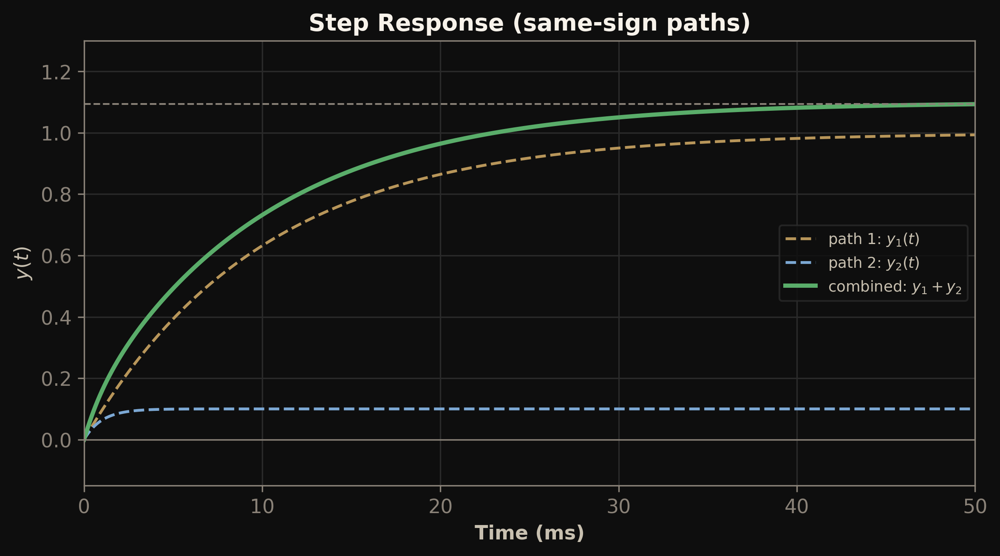
Next, consider the case where the second path has opposite sign and higher high-frequency gain:
Here \(|\beta/\alpha| = 4\) and \(b/a = 10\), satisfying the first condition (\(1 < 4 < 10\)), so the zero lands at \(s = +200\) — in the RHP. Path 2 has a lower DC gain (\(0.4\) vs \(1\)) but is ten times faster. In the step response, the fast inverting path responds first and drags the output negative; the slow non-inverting path then takes over and pulls it up to the final value.
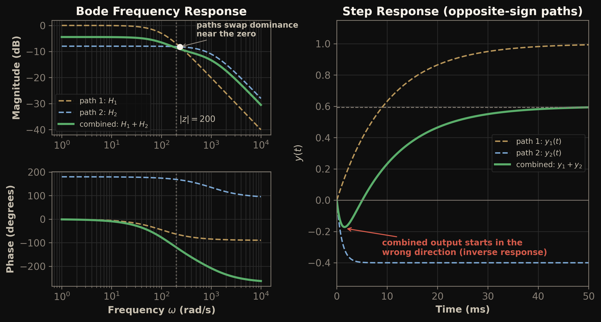
Frequency-Dependent Shunt Path
The gain from input to output depends on the impedance between output and the ground node.
where \(Z_L(s)\) is the load impedance and \(Z_S(s)\) is the source impedance. A zero is created when \(Z_L\) goes to zero at a certain frequency. For example, let a series RC circuit be placed as a load. The load impedance is given by:
\(Z_L(s)\) goes down to zero at \(s = -1/RC\) which creates a zero in the transfer function.